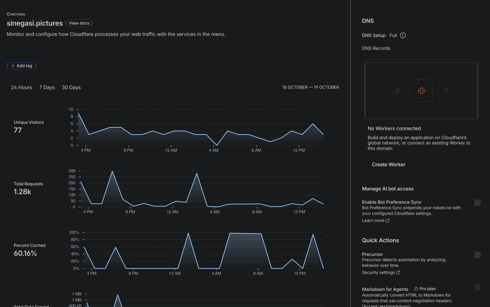
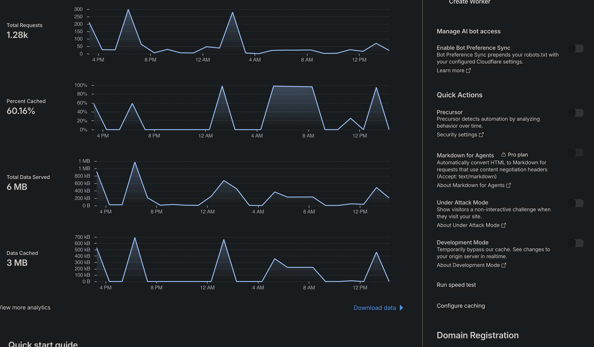

BUKU PEGANGAN PEMILIK APLIKASI · VERSI PEMULA
Monitoring Sinegasi, mulai dari nol
Tujuan Anda bukan menghafal istilah server. Cukup bisa menjawab: aplikasi bisa dipakai, ada masalah yang perlu ditangani, dan backup terakhir berhasil atau tidak?
Jika yang terlihat justru kode HTML di editor: buka Finder → folder proyek → ops → monitoring. Klik kanan Panduan-Monitoring-Sinegasi.html → Open With → Safari / Google Chrome. Setelah tampil seperti halaman buku, mulai latihan di bawah.
Cara memakai buku ini: buka panduan di satu jendela, lalu praktik di jendela lain. Ikuti satu langkah sampai selesai. Jangan membaca semua bab sekaligus.
Hari pertama: Bab 1 → Bab 2 → Bab 5. Setelah itu, pelajari grafik Cloudflare pada Bab 3–4. Untuk pemeriksaan berikutnya, langsung buka kartu pemeriksaan harian.
Panduan ini bukan dashboard live. Angka contoh tidak ikut berubah. Perintah dan halaman dashboard di dalamnya digunakan untuk melihat kondisi terbaru.
BAB 1 · PERSIAPAN PERTAMA
Mulai dari tiga tempat saja
Bayangkan aplikasi seperti toko. Cloudflare mencatat pengunjung di pintu; VPS menjalankan pekerjaan toko; Supabase menyimpan data. Catatan satu tempat tidak otomatis mencakup semua tempat lainnya.
| Tempat | Anda membuka apa? | Untuk melihat apa? |
|---|---|---|
| Cloudflare | Website Cloudflare di Chrome/Safari. | Trafik domain, pemblokiran web, koneksi Tunnel. |
| VPS | Terminal Mac, lalu masuk ke server. | Keadaan layanan, error API yang tercatat, SSH, dan backup. |
| Supabase | Website Supabase di Chrome/Safari. | Masalah database, bila perlu ditelusuri lebih jauh. |
Tidak perlu membeli alat baru. Latihan ini menggunakan sistem yang sudah ada. Langganan domain bukan otomatis langganan semua fitur keamanan Cloudflare. Bila muncul tombol Upgrade, jangan membayar untuk mengikuti panduan ini.
Aturan membaca kotak pada panduan
KETIK — kotak seperti ini berisi perintah yang boleh disalin.
uname -sCONTOH HASIL — ini untuk dibaca, jangan diketik.
Darwin
Darwin berarti Anda masih berada di Mac. Setelah terhubung ke VPS,
hasil perintah yang sama adalah Linux.
Salin hanya isi kotak KETIK, lalu tekan Enter satu kali.
Jangan ikut menyalin ubuntu@…$, kata “CONTOH”, maupun hasil laporan.
Jika ada teks phase=COMPLETE, itu catatan proses, bukan perintah.
Password yang mana?
| Yang muncul di layar | Yang Anda masukkan |
|---|---|
| Dialog macOS/Keychain meminta izin atau membuka kunci. | Password login Mac/Keychain sesuai dialog, bukan password backup. |
Enter passphrase for key… | Passphrase kunci SSH Anda, jika kunci itu dilindungi passphrase. |
[sudo] password for ubuntu: | Password akun ubuntu pada VPS. |
| Permintaan password database atau key R2 saat hanya menjalankan laporan. | Tidak diharapkan. Berhenti dan periksa perintah; jangan memasukkan rahasia lain. |
Saat mengetik password di Terminal, huruf/bintang biasanya tidak terlihat. Itu normal. Ketik atau tempel password yang benar, lalu Enter. Jangan kirim password ke chat.
Pemeriksaan bukan perbaikan otomatis. Jangan klik Reset VPS, Change OS, Restart, mengubah DNS/WAF, atau mematikan keamanan hanya karena ingin melihat log. Tindakan tersebut berbeda dari monitoring.
BAB 2 · LATIHAN PERTAMA
Lihat laporan aplikasi melalui Terminal Mac
Hasil akhir latihan: Anda dapat menemukan waktu pemeriksaan, keadaan API, error yang tercatat, dan ringkasan backup. Langkah ini tidak menjalankan backup atau restart.
Langkah 1 — buka Terminal di Mac
Tekan ⌘ + Space, ketik Terminal, lalu Enter. Biarkan jendela panduan tetap terbuka.
Langkah 2 — masuk ke VPS
Sebelum mencoba: Mac ini harus sudah memiliki akses kunci SSH dan identitas server yang diverifikasi operator. Perintah berikut bukan pemasang akses baru. Jika memakai Mac baru atau belum pernah berhasil masuk, minta operator menyiapkannya; jangan menghapus pemeriksaan keamanan agar koneksi dipaksa berhasil.
KETIK DI TERMINAL MAC
ssh -o StrictHostKeyChecking=yes -o ServerAliveInterval=30 ubuntu@43.157.242.8Yang Anda tunggu
Bagian awal baris terminal menjadi ubuntu@VM-11-154-ubuntu.
Ini tanda perintah berikutnya akan dijalankan di VPS, bukan Mac.
Jika berbeda
Permission denied (publickey) berarti akses kunci SSH perlu diperiksa.
Jika ada peringatan host key berubah atau belum dikenal, berhenti dan minta verifikasi
identitas server. Jangan mengganti pemeriksaan host menjadi no.
Langkah 3 — tampilkan laporan
KETIK DI VPS, SETELAH BERHASIL MASUK
sudo /usr/local/sbin/sinegasi-monitor reportBila diminta [sudo] password for ubuntu, gunakan password VPS.
Tunggu sampai laporan selesai dan baris perintah muncul kembali.
Contoh cara membaca — bukan hasil live saat ini
Potongan berikut adalah contoh buatan yang disederhanakan. Laporan Anda lebih panjang. Cari label yang sama; angka dan waktunya bisa berbeda.
Waktu pemeriksaan : 19-10-2026 15:20:00 WIB Container API : running Health container : healthy (liveness, bukan tes DB) Restart / OOM : 0 / TIDAK RAM terpakai : 45.0% Disk root terpakai : 38.0% Collector terakhir: 19-10-2026 15:18:00 WIB Collector segar : YA (≤15 menit) API error tercatat: 0 status 5xx; 2 status 401; 0 status 403; 0 status 429 Login terstruktur : BELUM ADA EVENT (bukan berarti tidak ada percobaan). Backup terakhir : usia 3.00 jam; terlambat=TIDAK; jadwal=AKTIF
| Cari baris ini | Artinya | Yang Anda lakukan |
|---|---|---|
| Waktu pemeriksaan | Jam laporan dibuat, dalam WIB. | Pastikan ini waktu yang baru, bukan screenshot laporan lama. |
Layanan AKTIF; API running | Proses sedang berjalan. | Jika tidak aktif/restarting/exited, catat layanan dan jamnya; lanjut Bab 7. |
healthy | Proses API menjawab pemeriksaan dasar. | Tetap cek satu halaman data; ini belum menguji seluruh database/fungsi aplikasi. |
| Restart / OOM | Jumlah restart tercatat; OOM berarti proses kehabisan memori. | Bandingkan laporan berikutnya. Restart bertambah berulang atau OOM=YA perlu ditelusuri. |
| RAM / Disk | Persentase ruang memori/penyimpanan yang digunakan. | Jika mendekati penuh dan terus naik, laporkan. Jangan menghapus log/backup sembarang. |
| Collector segar | Percobaan pengumpulan terakhir belum lebih dari 15 menit; percobaan itu bisa gagal. | Baca juga Peringatan histori. YA bukan jaminan log berhasil terbaca; jika TIDAK, periksa jadwal di bawah. |
| API error tercatat | Jumlah status dari sebagian request API yang tersimpan dalam 24 jam. | 5xx baru/bertambah dan pengguna terganggu: periksa Error terbaru. 401 saja bukan bukti dibobol. |
| Backup terakhir | Usia unggahan sukses terakhir dan keadaan jadwal. | Jika terlambat=YA atau jadwal belum terkonfirmasi, buka laporan backup pada Bab 5. |
CPU beban rata-rata 1m bukan persen. Misalnya angka 0,5 pada 2 CPU tidak berarti CPU 50%. Angka yang terus tinggi bersama aplikasi lambat perlu ditelusuri; satu angka sesaat belum cukup untuk memutuskan upgrade.
Patokan awal, bukan alarm otomatis: disk 90% atau lebih berarti ruang tersisa makin sempit, sehingga perlu ditinjau sebelum penuh. RAM tinggi yang berulang, OOM=YA, atau restart bertambah bersama keluhan aplikasi juga perlu ditelusuri. Jangan menyimpulkan serangan hanya dari persentase resource.
Tiga hasil yang harus dibedakan
- Normal menurut pemeriksaan terbatas: layanan berjalan, percobaan collector masih baru, tidak ada peringatan histori/kegagalan baca atau peringatan lain, backup tidak terlambat, dan satu fungsi baca bekerja.
- Perlu diperiksa: layanan mati, error meningkat, backup gagal, atau fungsi yang biasanya berjalan sekarang tidak bisa dipakai.
- Belum diketahui: muncul BELUM TERKONFIRMASI, gap/batas histori, atau log belum ada. Ini bukan hasil sehat maupun hasil pasti diretas.
“Peringatan histori: ada gap/batas/kegagalan” berarti ada bagian catatan yang tidak lengkap. Walaupun Collector segar=YA, angka error bisa kehilangan kejadian. Catat peringatannya; jangan menafsirkan nol sebagai bukti aman.
Jika ada “Error terbaru”, baca satu baris seperti ini
CONTOH BUATAN — BUKAN ERROR LIVE, JANGAN DIKETIK
19-10-2026 15:21:00 WIB | HTTP_5XX | GET /api/users | HTTP 500 | request=00000000-0000-4000-8000-000000000001
Bacanya: “Pukul 15.21 WIB, permintaan membaca daftar pengguna mendapat error server 500.”
Simpan waktu, fitur/rute, kode, dan request ID untuk programmer. /api/users adalah rute API,
bukan nama file source yang rusak. Programmer menentukan file/baris kode dari penelusuran ID dan sumber log yang sesuai.
Jika bagian ini kosong, artinya tidak ada error yang tersimpan dalam cakupan laporan tersebut. Itu belum membuktikan seluruh aplikasi bebas error.
Belum ada event login bukan berarti tidak ada login. Pada catatan penerapan 19 Oktober 2026 pukul 14.21 WIB, pencatatan login/aktivitas dan error browser baru belum dirilis ke aplikasi produksi. Panduan ini tidak mengklaim sudah mengecek ulang rilis live. Daftar nama pengguna online secara real-time belum tersedia dari laporan ini.
Jika collector tidak segar: cek apakah jadwal pengumpulan aktif
KETIK DI VPS
sudo bash /usr/local/lib/sinegasi-monitor-v1/control-vps.sh statusCONTOH HASIL YANG DIHARAPKAN — JANGAN DIKETIK
MONITOR_CRON_ENABLED — tiap 5 menit pada 03,08,...,58.
Ini membuktikan konfigurasi jadwal sesuai, bukan setiap pengumpulan berhasil.
Tunggu lewat waktu terjadwal berikutnya, jalankan report lagi, dan cocokkan
“Collector terakhir”. Bila masih tidak maju, laporkan; jangan memasang cron kedua.
Selesai latihan: Anda bisa menunjuk waktu laporan, keadaan API, dan usia catatan aplikasi. Untuk keluar dari VPS, ketik perintah ini:
KETIK DI VPS BILA SUDAH SELESAI
exitTerminal kembali ke Mac. Menutup SSH tidak mematikan cron atau aplikasi di VPS.
Kembali ke daftar isiBAB 3 · PENGUNJUNG DAN TRAFIK
Apa arti grafik pada screenshot Anda?
Trafik artinya permintaan yang datang ke website. Satu kunjungan dapat meminta banyak file: halaman, gambar, JavaScript, dan data API.

| Di screenshot | Bacanya seperti ini |
|---|---|
| 24 Hours · 18–19 October | Angka di bawah merangkum periode tersebut, bukan satu menit sekarang. |
| Unique Visitors: 77 | Hitungan berbasis alamat IP yang dapat mencakup bot. Bukan 77 akun atau 77 orang sedang online. |
| Total Requests: 1.28k | Sekitar 1.280 permintaan; bukan 1.280 manusia. |
| Percent Cached: 60.16% | Bagian permintaan yang dilayani dari salinan sementara Cloudflare. Bukan nilai keamanan. |
| Total Data Served: 6 MB | Ukuran data yang dikirim dalam periode itu. Bukan ukuran backup maupun bukti data dicuri. |
| Data Cached: 3 MB | Data yang disajikan dari cache. Angka pembulatan tidak harus cocok persis dengan persentase permintaan. |
Garis naik berarti trafik bertambah, belum tentu serangan.
Garis nol bukan bukti server mati. Pada dashboard Cloudflare yang sudah dibuka, bukan gambar di atas,
arahkan kursor ke satu titik untuk melihat
nilai/jam, lalu cek zona waktu dashboard. 4 PM berarti pukul 16.00
pada zona waktu grafik, tidak otomatis WIB.
Rujukan: cara Cloudflare menghitung pengunjung.
Latihan — lihat trafik yang lebih dekat dengan waktu kejadian
- Buka Cloudflare Dashboard dan login seperti biasa.
- Pilih website/domain sinegasi.pictures. Anda berada pada Overview seperti screenshot.
- Gulir ke bawah grafik, cari View more analytics di kiri bawah. Klik itu, bukan Download data di kanan.
- Di Analytics pilih Traffic / HTTP Traffic, jika tab itu muncul.
- Pilih rentang 1 jam terakhir bila tersedia. Jika tidak, gunakan rentang terpendek yang tersedia dan tulis rentangnya pada catatan Anda.
- Jika ada Add filter, pilih Host / Hostname,
operator is / equals, nilai
api.sinegasi.pictures, lalu Apply. Jika filter tidak tersedia pada tampilan/paket Anda, lewati; jangan upgrade.
Yang Anda lihat
Grafik periode yang dipilih. Bila filter hostname diterapkan, trafik yang terlihat khusus hostname API.
Cara mengambil kesimpulan
Tulis “Ada N permintaan pada rentang X untuk hostname Y”, bukan “Ada N pengguna online”. Bandingkan periode yang sama panjang dan hostname yang sama.
Jika halaman berbeda
Cari menu Analytics setelah domain dipilih. Menu lama bisa bernama Analytics & Logs. Bila masih tidak cocok, simpan screenshot menu, judul, dan pilihan waktu; minta bantuan navigasi. Jangan membuat Worker agar grafik muncul.

Jangan nyalakan Development Mode atau Under Attack Mode untuk membaca grafik. Development Mode berkaitan dengan cache; Under Attack Mode mengubah pemeriksaan pengunjung. “No Workers connected” juga tidak berarti aplikasi mati.
Penjelasan cache: Development Mode. Untuk monitoring pada panduan ini, tidak ada sakelar Quick Actions yang perlu Anda ubah.
Rujukan navigasi: Zone Analytics. Tampilan dan filter dapat berbeda menurut paket. Pembacaan screenshot di atas bukan audit serangan.
Kembali ke daftar isiBAB 4 · BOT DAN PERMINTAAN YANG DITOLAK
Ada percobaan masuk atau serangan?
Mulai dengan pertanyaan kecil: “Apakah ada permintaan yang ditindak Cloudflare?” Itu berbeda dari “Apakah seseorang berhasil membobol aplikasi?”.
Latihan — buka satu kejadian keamanan
- Di Cloudflare, tetap pilih domain sinegasi.pictures.
- Di Analytics, cari bagian keamanan dan tab Events. Navigasi lama dapat memakai Security → Events / Security Events.
- Atur waktu sekitar kejadian, misalnya 1 jam terakhir bila tersedia.
Jika ada filter Hostname, pilih
api.sinegasi.picturesuntuk fokus API. - Klik satu baris kejadian. Baca waktu, hostname, path, action, sumber/rule, dan Ray ID. Path berarti alamat bagian website yang diminta.
Jika tidak ada baris
Periksa waktu dan filter. Paket Free menggunakan sampel pada Events; kosong bukan bukti tidak ada serangan. Jangan membuat serangan sendiri untuk mengisi tabel.
| Action yang terbaca | Artinya | Tindakan awal |
|---|---|---|
| Block | Permintaan itu ditolak oleh Cloudflare. | Catat pola/jamnya. Jangan menyimpulkan hacker berhasil masuk. |
| Managed Challenge | Permintaan diberi pemeriksaan tambahan. | Periksa hasil/detail; ini bukan catatan login aplikasi berhasil. |
| Skip / Allow / Log, jika ada | Baca detail aturan: melewati kontrol tertentu atau dicatat tidak sama dengan izin login aplikasi. | Cocokkan dengan error/aktivitas aplikasi, bukan menilai dari action saja. |
Events berisi kejadian dari produk keamanan, bukan daftar semua kunjungan atau semua login. Satu request bisa menghasilkan lebih dari satu event. Rujukan: Cloudflare Security Analytics; detail kejadian: Security Events.
Contoh pola dan cara merespons
- Banyak permintaan ke alamat yang tidak ada dapat berasal dari pemindai bot. Catat apakah diblokir dan apakah aplikasi terganggu. Jangan menganggap semua bot berhasil masuk.
- Login sah ikut ditolak memerlukan pemeriksaan rule dan limiter. Jangan mematikan semua WAF atau mengizinkan seluruh negara/IP untuk mencoba.
- Lonjakan trafik + error 5xx + aplikasi lambat perlu ditelusuri segera, tetapi penyebabnya bisa beban, bug, database, atau serangan.
Untuk serangan SSH: baca bagian SSH pada laporan VPS Bab 2. SSH adalah pintu administrasi server, bukan login pengguna aplikasi. WAF website Cloudflare tidak melindungi akses SSH langsung ke IP VPS.
Login SSH sukses dengan key bisa milik Anda atau otomatisasi. Cocokkan waktu kegiatan operator. Jika ada sukses yang tidak dikenali, perlakukan sebagai dugaan insiden dan ikuti Bab 7.
Kembali ke daftar isiBAB 5 · BACKUP DAN CRON
Backup berhasil kapan, dan filenya di mana?
Cron adalah penjadwal otomatis. Memasang jadwal belum membuktikan pekerjaan selesai. Anda perlu membedakan jadwal aktif → proses dimulai → backup selesai dan upload diverifikasi.
Dua jadwal berbeda: backup database dijadwalkan setiap hari, Senin–Minggu, pukul 02.17 WIB. Pengumpulan catatan monitor dijadwalkan setiap 5 menit, pada menit 03, 08, 13, …, 58.
Ini jadwal dari konfigurasi terdokumentasi, bukan klaim eksekusi terbaru sudah dicek pada saat Anda membaca. Buka laporan berikut untuk memastikannya.
Langkah 1 — buka laporan backup
Masuk VPS seperti Bab 2, lalu jalankan:
KETIK DI VPS
sudo /usr/local/sbin/sinegasi-backup reportPerintah ini membaca bukti lokal; tidak menjalankan backup/restore baru atau membuka isi database.
Jika laporan lengkap tidak muncul dan ada pesan “PERLU DICEK: laporan tidak dapat dibaca lengkap”, jangan menganggap backup sukses maupun gagal total. Jalankan perintah log tersanitasi di bagian bawah bab ini dan hubungi operator dengan pesan tersebut. Jangan membuat atau mengganti file state sendiri.
Langkah 2 — cari tujuh bagian ini
| Label di laporan | Arti dan pemeriksaan Anda |
|---|---|
| Jadwal backup | Harapannya AKTIF, setiap hari 02:17 WIB. Jika belum terkonfirmasi, jangan memasang jadwal duplikat. |
| BACKUP BERHASIL TERAKHIR | ID backup dan waktu Selesai (log). Pastikan waktunya masuk akal terhadap jadwal. |
| Receipt lokal | COCOK berarti bukti verifikasi upload/hash saat backup sesuai catatan lokal. Bukan pengecekan R2 langsung saat ini. |
| Lokasi R2 / File | Menunjukkan folder ID dan nama arsip terkait; gunakan untuk mencari di Cloudflare. |
| Kegagalan terbaru / KEGAGALAN TERAKHIR | Baca waktu, tahap, kode dan file. Backup lama sukses tidak meniadakan kegagalan yang lebih baru. |
| Mulai via cron | Bukti penjadwal memulai proses. Cocokkan dengan bukti selesai pada waktu/ID yang relevan. |
| Kesimpulan | NORMAL menurut bukti lokal, atau PERLU DICEK. Ini bukan jaminan database bisa dipulihkan seluruhnya. |
Jika “Mulai via cron” belum ditemukan, jangan langsung menyebut cron rusak: bisa belum melewati jadwal pertama, jurnal tidak tersedia, atau backup terakhir dijalankan manual. Catatan mulai tanpa selesai juga belum membuktikan sukses.
Contoh sukses — temukan ID yang akan dicocokkan
CONTOH BUATAN YANG DIPOTONG — BUKAN HASIL SERVER SAAT INI
Jadwal backup : AKTIF, setiap hari 02:17 WIB BACKUP BERHASIL TERAKHIR ID : 20261020T191700Z-00000000-0000-4000-8000-000000000001 Selesai (log) : 21-10-2026 02:17:50 WIB Receipt lokal : COCOK; upload/hash diverifikasi saat backup Lokasi R2 : sinegasi-prod-db-backups/scheduled/v1/20261020T191700Z-00000000-0000-4000-8000-000000000001/
Bagian panjang setelah v1/ sama dengan baris ID.
Pada latihan nyata gunakan ID dari laporan Anda, bukan ID contoh ini.
Huruf Z pada ID menandai UTC; jam Selesai (log) sudah ditampilkan dalam WIB.
Langkah 3 — lihat file yang sama di Cloudflare R2
- Di Cloudflare kembali ke tingkat akun, bukan hanya halaman domain.
- Buka R2 / R2 Object Storage dari menu atau pencarian dashboard.
- Pilih bucket sinegasi-prod-db-backups.
- Buka prefix/folder scheduled → v1 → ID backup yang sama dengan laporan.
- Cocokkan keberadaan nama berikut. Cukup lihat; jangan hapus, unduh, atau menampilkan key untuk latihan ini.
Dengan contoh di atas, folder terakhir harus bernama
20261020T191700Z-00000000-0000-4000-8000-000000000001.
Jika ID berbeda, Anda sedang melihat backup lain; kembali dan cocokkan lagi.
| Nama file | Isinya secara umum |
|---|---|
database.dump.age | Arsip database terenkripsi. |
catalog.json.age | Katalog pendamping terenkripsi. |
receipt.json | Catatan verifikasi ID/hash; bukan isi database. |
Jika ID tidak terlihat, periksa akun, bucket, prefix, filter pencarian dan izin Anda. Bukti file terlihat sekarang + receipt lokal lebih informatif daripada mengandalkan satu tulisan “aktif”. Keberadaan file tetap bukan bukti uji restore.
Kalau gagal, cara membaca jam dan file yang terkait
CONTOH KEGAGALAN BUATAN — BUKAN KEJADIAN PADA SERVER ANDA
KEGAGALAN TERAKHIR (maksimum 5) Waktu : 20-10-2026 02:18:10 WIB Tahap : upload/verifikasi R2 Kode : UPLOAD_FAILED File terkait : database.dump.age
Bacanya: “Pada 20 Oktober pukul 02.18.10 WIB, tahap upload arsip database gagal.” File terkait bukan berarti file sumber pasti rusak. Bisa karena jaringan, kredensial, izin, atau penyimpanan. Jika log lama tidak mencatat file, laporan akan menyebutnya tidak tercatat; jangan menebak nama file atau membuat bukti historis baru.
Jika perlu rincian log yang telah disanitasi, gunakan:
KETIK DI VPS
sudo bash /usr/local/lib/sinegasi-scheduled-backup-v1/control-vps.sh logsCatat baris waktu/tahap/kode yang gagal. phase=COMPLETE adalah catatan selesai;
phase=VERIFY_LOGIN status=OK hanya berarti tahap login sukses, belum seluruh backup selesai.
Backup ini bukan salinan seluruh aplikasi. Dump database tidak menyertakan isi file foto/video di object storage, konfigurasi semua provider, atau seluruh VPS. Metadata Storage dalam DB berbeda dari isi berkasnya.
Upload terverifikasi ≠ restore teruji. Uji pemulihan dilakukan terpisah dan terisolasi, bukan dengan menimpa database produksi. Jangan menjalankan restore hanya untuk mengecek monitor.
Panduan backup lebih khusus: buka panduan cek cron backup. Pengingat rotasi token: 18 September, 11 Oktober, dan 17 Oktober 2027; token pada screenshot kedaluwarsa 18 Oktober 2027. Verifikasi lagi tanggal di dashboard ketika melakukan rotasi.
Kembali ke daftar isiBAB 6 · SAAT MASALAH SEDANG TERJADI
“Real-time” itu yang mana?
Anda belum memiliki satu layar yang menjamin seluruh error dan semua pengguna terlihat seketika. Ada catatan yang langsung diperiksa, ada yang dikumpulkan berkala, dan ada yang belum tersedia.
| Yang diperiksa | Kapan datanya dibaca? | Batas yang harus diingat |
|---|---|---|
Layanan, container, RAM/disk pada report | Saat perintah laporan dijalankan. | Keadaan sesaat, bukan jaminan semua fitur bekerja. |
Error/aktivitas aplikasi pada report | Dari catatan tersimpan; collector dijadwalkan tiap 5 menit. | Collector terakhir adalah waktu percobaan. Baca peringatan gap/gagal juga; YA tidak menjamin seluruh catatan terbaca. |
| Grafik Cloudflare | Agregat periode terpilih, dapat tertunda/tersampel. | Bukan daftar orang online atau salinan semua request detik ini. |
| Network pada browser Anda | Saat browser Anda mengirim request. | Hanya aktivitas browser Anda, bukan seluruh pengguna. |
| Logs Supabase, live mode jika tersedia | Event layanan Supabase yang masuk. | Bukan seluruh error frontend/backend. Retensi mengikuti paket. |
Prosedur sederhana ketika seseorang melapor error sekarang
- Tulis jam WIB dan gejala. Misalnya “15.20 WIB, halaman daftar gagal dimuat”.
- Jalankan laporan VPS sekali. Lihat layanan, API, RAM/disk dan waktu collector.
- Buka aplikasi sekali secara normal. Gunakan akun Anda yang sah dan halaman baca; jangan mengulang simpan/hapus/transaksi yang hasilnya belum jelas.
- Baca status request di browser dengan langkah di bawah bila perlu.
- Sesudah satu waktu collector berikutnya, jalankan laporan lagi. Bandingkan waktu dan error yang tercatat; jangan menunggu bila ada dugaan kebocoran nyata.
- Kirim bukti minimum ke programmer secara privat memakai format pada Bab 11.
Membuka report setiap detik tidak membuat catatan aplikasi bertambah setiap detik.
Jika collector berhenti, mengulang laporan hanya menampilkan data lama lagi.
Latihan opsional — melihat error Anda sendiri langsung di Chrome
- Buka aplikasi Sinegasi di Chrome, bukan dashboard akun provider.
- Tekan ⌘ + ⌥ + I. Panel Developer Tools muncul.
- Klik tab Network. Jika tersembunyi, cari pada tombol ».
- Pilih filter Fetch/XHR. Buka satu halaman daftar/baca secara normal.
- Klik request yang gagal. Pada Headers → General, baca Status Code. URL penuh, header lain, dan Response bisa memuat data rahasia; jangan menyalin semuanya.
- Catat hanya waktu, kode status, nama fitur, dan request ID aman bila tersedia. Tutup panel dengan ⌘ + ⌥ + I setelah selesai.
Jika tabel kosong, panel mungkin baru dibuka setelah request terjadi atau filter tidak cocok. Navigasi baca sekali lagi; jangan mencoba login gagal berkali-kali. Tidak ada status HTTP bila koneksi tidak memperoleh respons.
Jangan unggah HAR, “Copy as cURL”, token, cookie, Authorization header, isi formulir, atau respons berisi data siswa. Bukti yang perlu dibagikan harus dipilih dan disamarkan dahulu.
Rujukan: Chrome DevTools Network.
Kembali ke daftar isiBAB 7 · MENENTUKAN TINDAKAN
Error biasa, percobaan ditolak, atau dugaan kebobolan?
HTTP status adalah kode jawaban atas satu permintaan. Kode ini petunjuk, bukan kesimpulan keamanan seluruh aplikasi.
| Kode | Bahasa sederhananya | Tindakan awal Anda |
|---|---|---|
| 2xx, misalnya 200 | Permintaan mendapat jawaban sukses menurut layanan. | Cek hasilnya sesuai hak akses; 200 tidak menjamin orang yang mengakses berhak. |
| 401 | Autentikasi tidak diterima; bisa sesi kedaluwarsa. | Login ulang secara normal bila perlu. Jangan menebak password berulang. |
| 403 | Akses ditolak oleh aplikasi atau lapisan keamanan. | Catat dari lapisan mana. Penolakan bisa benar, atau pengguna sah ikut terblokir. |
| 404 | Alamat/data tidak ditemukan atau sengaja tidak ditampilkan. | Cek rute yang sah; request bot ke rute asing belum berarti kebobolan. |
| 429 | Terlalu banyak percobaan; pembatas bekerja. | Hentikan pengulangan, ikuti waktu tunggu jika ada. Jangan pindah IP untuk melewati batas. |
| 500 / 502 / 503 / 504 | Error server, penghubung, layanan tidak tersedia, atau timeout. | Catat waktu + ID; cek laporan VPS, Tunnel, lalu database sesuai gejala. |
Request ID API membantu programmer mencari satu request di aplikasi. Ray ID Cloudflare membantu mencari kejadian di Cloudflare. Keduanya bukan ID yang sama.
Pilih gejala Anda, lalu buka tempat yang tepat
| Gejala yang terlihat | Buka terlebih dahulu | Bagian yang mungkin perlu diperbaiki programmer |
|---|---|---|
| Halaman kosong/putih, tombol tidak bekerja. | Browser Network; status deployment Cloudflare Pages. | Frontend/berkas rilis/koneksi API. Server running saja belum cukup. |
| 502/503/504 atau API tak menjawab. | Laporan VPS dan Tunnel (Bab 9). | Container API, koneksi Tunnel, resource atau dependensi. |
| Daftar gagal dimuat atau simpan gagal. | Status request, waktu/ID, lalu Supabase Logs (Bab 8). | Validasi API, izin database, query atau dependensi. Tidak otomatis semuanya masalah DB. |
| Backup gagal/terlambat. | Laporan backup (Bab 5). | Penjadwal, koneksi DB/R2, izin atau kredensial backup. |
| Block/Challenge meningkat. | Cloudflare Events (Bab 4). | Rule/limiter yang relevan, hanya jika ada dampak atau salah blok. |
| Data privat terlihat oleh akun yang tidak berhak. | Catat bukti minimum; hentikan penelusuran. | Otorisasi/ownership backend dan aturan DB yang sesuai. Prioritaskan sebagai insiden. |
Contoh “kebobolan” — hipotetis, bukan temuan pada Sinegasi
- Akun biasa bisa membaca data privat akun lain yang seharusnya tidak dibagikan.
- Ada akun admin/perubahan peran yang tidak dibuat operator sah.
- Login SSH sukses atau perubahan deployment/DNS yang tidak dikenali setelah dikonfirmasi ke operator.
- Kredensial rahasia dipublikasikan. Ini perlu ditangani walaupun belum ada bukti dipakai penyerang.
IP asing, satu grafik tinggi, satu error 500, atau banyak Block belum cukup untuk menyatakan kebobolan.
Jika dugaan akses tak sah kuat: urutan aman
- Berhenti mencoba endpoint atau membuka data lain. Jangan mengunduh seluruh data untuk “memastikan”.
- Catat waktu WIB, akun/peran yang digunakan, fitur, harapan vs hasil, request ID/Ray ID bila ada. Simpan bukti minimum secara privat.
- Hubungi programmer/operator dari perangkat yang dipercaya. Cocokkan kegiatan sah dan tentukan cakupan terdampak.
- Bersama operator, batasi hanya akses/sesi/kredensial yang terdampak dengan jalur pemulihan tetap tersedia. Mekanisme pencabutan sesi harus sesuai autentikasi aplikasi; logout saja belum tentu mencabut semua token.
- Jangan Reset VPS, Change OS, menghapus log, atau restore produksi spontan. Tindakan itu dapat menghilangkan bukti atau menambah kehilangan data.
- Perbaiki akar masalah, uji di lingkungan terpisah, rilis terkontrol, lalu periksa ulang. Mengganti password saja tidak membuktikan server bersih.
BAB 8 · OPSIONAL: MENELUSURI DATABASE
Lihat error Supabase tanpa mengetik SQL
Database adalah penyimpanan data terstruktur aplikasi. Buka bab ini bila masalah fitur perlu ditelusuri, bukan karena semua baris log harus Anda pahami sendiri.
Latihan — cari catatan sekitar jam masalah
- Buka Supabase Dashboard dan login.
- Pilih CMS Sinegasi Picture.
Cocokkan project ref
pvbdiftvzoeelibxlxzb, agar tidak membaca project yang salah. - Klik Logs. Pilih Time Range sekitar kejadian; mulai dari 15–60 menit. Cocokkan zona waktu. Jika tertulis UTC, WIB adalah UTC +7 jam.
- Pilih Log Type → Postgres untuk masalah database. Mulai dengan Level → Error bila tersedia. Jangan mengisi User dahulu.
- Jika perlu, lihat PostgREST atau API Gateway untuk jalur API database; keduanya jenis log berbeda. Tampilan lama dapat menyediakan koleksi terpisah pada sidebar.
- Klik satu baris, buka Overview. Catat waktu dan kode error/SQLSTATE jika ada. Baca detail secara privat; query/pesan dapat mengandung data siswa atau nilai sensitif.
- Bila tersedia, live mode menampilkan event baru pada jenis log itu. Matikan atau tinggalkan halaman setelah penelusuran; jangan memasang polling sendiri.
Jika kosong
Periksa rentang waktu, project, jenis log dan filter. Hapus filter tambahan satu per satu. Kosong berarti tidak ada hasil pada pencarian itu, bukan jaminan semua sehat. Tidak semua operasi sukses dicatat sebagai audit lengkap.
Jangan menjalankan SQL perbaikan otomatis. Bila memakai Advisors/Security Advisor, simpan nama temuan untuk review programmer. Jangan mengubah role, grants atau RLS secara massal.
Login aplikasi kustom tidak otomatis menjadi Supabase Auth log; berkas R2 juga tidak otomatis masuk log Supabase Storage. Retensi dan kemampuan log bergantung paket.
Navigasi diverifikasi melalui dokumentasi resmi Supabase Logs pada 19 Oktober 2026, bukan melalui pembukaan data produksi pada sesi penulisan ini.
Kembali ke daftar isiBAB 9 · KONEKSI DAN EMAIL
Apakah jalur ke VPS sehat, dan ada pemberitahuan?
Tunnel adalah jalur penghubung Cloudflare ke layanan VPS. Ini bukan database dan bukan halaman aplikasi itu sendiri.
A. Cek Tunnel
- Buka Cloudflare pada tingkat akun, bukan hanya Overview domain.
- Pilih Networking → Tunnels, lalu sinegasi-prod-api. Jika navigasi berbeda, gunakan pencarian dashboard untuk Cloudflare Tunnel. Jangan memilih WAN/GRE/IPsec.
- Baca status: Healthy berarti konektor terhubung; Degraded berarti koneksi terganggu sebagian; Down berarti tidak terhubung.
- Jika Degraded/Down, catat waktu dan cocokkan layanan Tunnel dalam laporan VPS. Jangan hapus atau buat ulang Tunnel untuk latihan.
Tunnel Healthy belum membuktikan API atau database sehat. Rujukan: Tunnel observability.
B. Periksa alert yang sudah disiapkan
Pada catatan 19 Oktober 2026, alert berikut pernah dikonfirmasi enabled; penerimaan email belum dikonfirmasi. Periksa keadaan saat ini di dashboard Anda:
- Di tingkat akun pilih Alerts → Overview. Navigasi lama dapat bernama Notifications.
- Cari Sinegasi PROD - Tunnel Health dan Sinegasi - HTTP DDoS.
- Periksa Enabled dan tujuan email yang Anda kenali. Tunnel alert seharusnya mengarah ke Tunnel produksi; alert DDoS yang disiapkan berlaku tingkat akun.
- Opsional: menu ⋯ → Test mengirim email uji berisi contoh, bukan membuat serangan. Periksa Inbox/Spam email tujuan dan catat jam penerimaannya.
- Jika tidak diterima, periksa tujuan, status/mute dan history alert. Jangan matikan server untuk mengetesnya.
Rujukan: Cloudflare Alerts dan Test.
Tidak semua masalah otomatis mengirim email. Alert DDoS bukan pemberitahuan setiap bot. Collector lokal tidak dapat memberi tahu ketika VPS yang sama mati total. Belum ada janji semua error aplikasi/backup masuk email. Karena itu pemeriksaan harian tetap diperlukan.
BAB 10 · LATIHAN AMAN
Menguji monitoring tidak perlu menyerang aplikasi
Latihan yang dapat dilakukan dari panduan ini
- Catat waktu WIB dan “Collector terakhir” pada laporan VPS.
- Buka satu halaman baca yang biasa Anda gunakan dengan akun sah. Jangan mengubah data.
- Di Network browser, perhatikan satu respons berhasil atau error yang memang terjadi.
- Sesudah jadwal collector berikutnya, tampilkan laporan VPS lagi. Periksa apakah waktunya maju. Angka request adalah subset 24 jam, jadi jangan menuntut bertambah tepat satu.
- Jika event tidak terlihat, periksa cakupan, gap dan versi aplikasi; jangan sengaja membuat error 500 atau brute force.
Berhasil membaca monitor berarti Anda bisa menemukan waktu, cakupan dan bukti, bukan membuktikan aplikasi kebal serangan.
Bedanya dengan pentest
Pentest adalah pengujian keamanan yang sengaja mencoba kelemahan. Itu pekerjaan terpisah yang memerlukan target, akun/data uji, waktu, batas permintaan, izin provider yang relevan, dan aturan berhenti yang disepakati.
Untuk pemula pada aplikasi live, jangan menjalankan SQLMap, scanner otomatis, fuzzing, tebak password, flood/DoS, mengubah role, atau mencoba ID data siswa lain. Pengujian aktif dimulai di staging terisolasi dengan data sintetis dan kredensial terpisah, bukan menyalin data produksi.
Kepemilikan domain tidak otomatis memberi izin menguji infrastruktur bersama provider. Kebijakan: Cloudflare · Supabase. Izin pentest Sumopod untuk skenario Anda perlu diverifikasi; panduan ini bukan penggantinya.
Tidak ada pentest produksi dijalankan saat panduan ini ditulis.
Kembali ke daftar isiBAB 11 · SAAT BINGUNG
Kendala umum dan cara meminta bantuan
| Yang terjadi | Lakukan ini |
|---|---|
No such file untuk perintah VPS saat prompt masih nama Mac. | Anda belum berada di VPS. Masuk SSH dahulu; jangan memasang script server ke Mac. |
Broken pipe / Connection reset. | Sesi SSH terputus. Masuk lagi dari Mac. Ini sendiri tidak membuktikan cron berhenti. |
| Perintah tidak ditemukan padahal sudah di VPS. | Pastikan host benar dan salinan perintah utuh. Laporkan pesan; jangan mengunduh installer acak. |
Terlihat > atau prompt belum kembali. | Bisa ada kutip/perintah tempelan belum lengkap. Untuk perintah cek interaktif ini, tekan Control+C satu kali, lalu salin satu perintah utuh. Jangan memutus proses backup/restore yang sengaja sedang berjalan. |
| Laporan menyebut collector sibuk. | Tunggu sebentar, coba satu kali lagi. Jika berulang, laporkan; jangan menghapus file lock/state. |
| Cloudflare/Supabase menampilkan Upgrade atau Access denied. | Jangan beli atau menambah izin sendiri. Gunakan tampilan yang tersedia dan minta pemeriksaan akses kepada pemilik akun. |
| Cloudflare banyak request, VPS lebih sedikit. | Cache/blok di Cloudflare, hostname berbeda, health yang dikecualikan, serta subset log dapat membuat angka berbeda. Samakan waktu dan cakupan dahulu. |
| Tidak ada nama orang online. | Grafik IP bukan akun. Aktivitas ID ≤10 menit juga bukan bukti sedang online; pencatatan baru harus sudah dirilis agar event tersedia. |
| CI/Checks GitHub hijau. | Tes kode lulus; bukan bukti kode sudah dirilis atau produksi sehat. Monitoring harian tidak membutuhkan klik Merge/Deploy. |
Kamus singkat
API: layanan yang menjawab permintaan data aplikasi. Log: catatan kejadian. Collector: program yang mengumpulkan sebagian catatan. Container: wadah proses aplikasi di VPS. Hostname: nama alamat, misalnya api.sinegasi.pictures. WAF: penyaring permintaan web. Bot: program otomatis, tidak selalu jahat. Deploy/rilis: memasang versi aplikasi. Restore: memulihkan data dari backup.
Salin template ini ke catatan privat saat ada masalah
TEMPLATE CATATAN — BUKAN PERINTAH TERMINAL
Waktu kejadian (tanggal + WIB): Fitur/halaman yang dibuka: Yang seharusnya terjadi: Yang benar-benar terjadi: Status HTTP (jika ada): Request ID API / Ray ID Cloudflare (beri label): Container API dan Collector terakhir: Backup terakhir / kode gagal (jika terkait): Apakah operator lain sedang rilis/perawatan: Tindakan yang sudah dicoba (sekali, tanpa rahasia):
Kirim melalui saluran privat yang disepakati. Repositori GitHub ini publik: jangan menempelkan bukti berisi IP pengunjung, identitas siswa, respons data, token, atau log mentah di issue/PR publik. Request/akun ID juga tetap perlu diperlakukan sebagai data privat operasional.
Monitor sengaja tidak menampilkan password, token, nama pengguna, IP mentah, body formulir, atau stack trace lengkap. Jadi laporan ini bukan tempat semua rincian error dikumpulkan. Programmer menelusuri sumber yang sesuai dengan waktu dan ID, dengan akses terbatas.
Kembali ke daftar isiBAB 12 · HALAMAN YANG DIPAKAI SETIAP HARI
Kartu pemeriksaan harian
Setelah latihan pertama, gunakan urutan singkat ini. Tidak perlu membuka semua dashboard setiap menit. Jika ada keluhan/alert, langsung gunakan Bab 6–7.
- Buka satu halaman aplikasi secara normal. Pastikan satu halaman data yang boleh Anda baca berhasil dimuat.
- Laporan VPS: baca waktu, layanan/API, collector segar, peringatan/error baru, dan RAM/disk.
- Laporan backup: cari sukses terbaru, jadwal aktif, kegagalan sesudah sukses, serta kesimpulan. Setelah 02.17 WIB, beri waktu proses selesai; periksa jam selesai, bukan hanya jam mulai.
- Cloudflare Events dan alert: cek periode yang sama, tindakan dan pola yang berdampak. Angka trafik tinggi sendirian bukan alasan mengubah keamanan.
- Catat hasil: normal menurut pemeriksaan terbatas / perlu diperiksa / belum diketahui, beserta waktu. Jika bermasalah, kirim bukti minimum, bukan semua log.
Tiga perintah yang paling sering dipakai
1. DI MAC — MASUK VPS
ssh -o StrictHostKeyChecking=yes -o ServerAliveInterval=30 ubuntu@43.157.242.82. DI VPS — LAPORAN APLIKASI/SERVER
sudo /usr/local/sbin/sinegasi-monitor report3. DI VPS — LAPORAN BUKTI BACKUP
sudo /usr/local/sbin/sinegasi-backup reportJalankan satu per satu, bukan sekaligus. Selesai? Ketik exit untuk kembali ke Mac.
Pemeriksaan berkala di luar rutinitas harian
- Mingguan: tinjau tren resource/error dan siapa saja operator sah; cocokkan penerimaan alert uji bila belum pernah diuji.
- Bulanan: tinjau uji restore terisolasi dengan operator, kapasitas/retensi, dan perubahan izin/rilis. Jangan menganggap receipt menggantikan uji restore.
- Sebelum token kedaluwarsa: ikuti pengingat Google Calendar, rotasi terkontrol, verifikasi backup dengan kredensial baru, lalu cabut yang lama sesuai prosedur.
Buka dan simpan di Mac
- Di Finder buka folder proyek → ops → monitoring.
- Klik kanan Panduan-Monitoring-Sinegasi.html → Open With → Safari / Google Chrome. Jangan membaca source HTML di editor sebagai panduan.
- Untuk mencari topik, tekan ⌘F, ketik misalnya “backup”, “401”, atau “password”. Atau gunakan daftar isi di awal.
- Untuk PDF, tekan ⌘P. Di Chrome pilih Destination → Save as PDF; di Safari pilih menu PDF → Save as PDF. Pilih folder Documents atau lokasi privat yang Anda inginkan.
- Jika memindahkan HTML, sertakan folder assets di sebelahnya agar screenshot tetap tampil. PDF hasil cetak menyertakan gambar dan lebih mudah dipindahkan sebagai satu file.
HTML ini tidak memakai script, pelacak, font eksternal, atau koneksi dashboard otomatis. Membukanya tidak mengakses server. Link dashboard/sumber baru terbuka ketika Anda klik.
Titik mulai Anda sekarang: praktikkan Bab 2 sampai laporan muncul, lalu Bab 5 sampai bisa menyebutkan kapan backup sukses terakhir dan apakah ada kegagalan lebih baru. Anda tidak perlu menghafal seluruh buku untuk mulai monitoring.